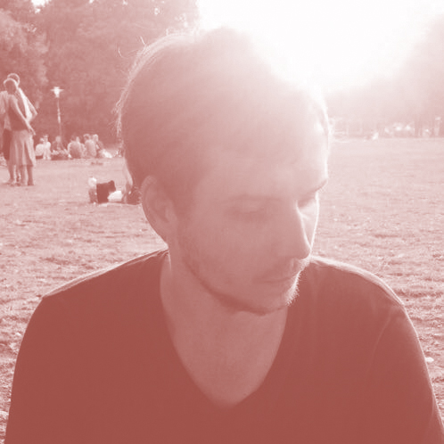

Luis Laski
*1988 in Berlin
2005 – 2008 Ernst-Litfass-Schule, Berlin-Reinickendorf
2012 Ausbildung zum Mediengestalter Gestaltung und Technik, Fachrichtung: Print
2012 - Oktober 2016 Grafiker beim Tagesspiegel, Politik und Konzepte
seit Oktober 2016 Studium für Kommunikationsdesign B.A. an der Hochschule für Technik und Wirtschaft